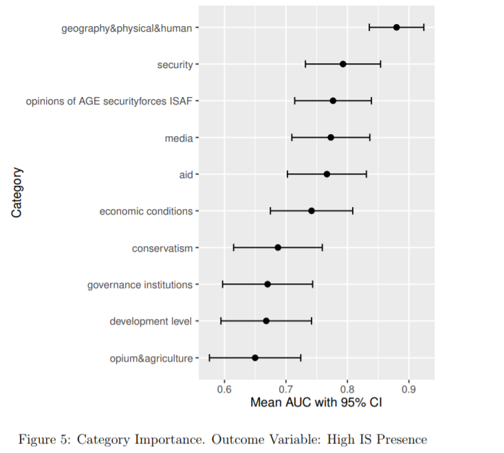

Research Projects
Independent Research
Research assitance at a glance



Learning resources for quant students
Lecture notes and textbooks
- Topics in Empirical Industrial Organization, by Kohei Kawaguchi
- Structural Econometric Methods in Industrial Organization and Quantitative Marketing, by Joonhwi Joo and Ali Hortacsu
- Demand estimation notes, by Frank Pinter
- Machine Learning for Causal Inference in Marketing, by Mitchell J. Lovett
- Causal Inference with Panel Data, by Xiqing Xu
- Handbook of the Economics of Marketing, by Jean-Pierre Dube and Peter Rossi
Conferences